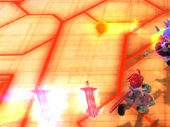
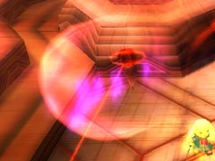
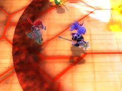
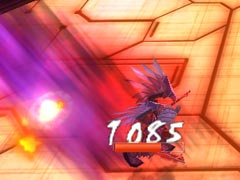
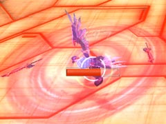
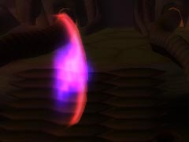
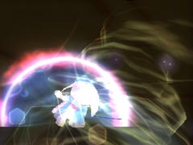
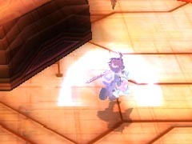

目次 > ゲームについて > 日本Falcom 攻略 > ZWEI II > ボス戦 > 真テルミドール
らんの眼
ZWEI II (ツヴァイ 2、ZWEI II Plus)
| 概要 | 情報 | 攻略チャート |
| フード交換 | ペットについて | ボス戦 |
| 敵キャラ一覧 | ハンターランク | G-コロッセオ |
| アイテム一覧 | ガジェット一覧 | トレジャー一覧 |
| ダンジョン一覧 | クリアデータ特典 | Plusの追加要素 |
| ZWEI II攻略へ | 目次へ戻る |
| 真テルミドール 第1段階 |
| 結論から言ってアルウェンの方が有利に戦えます。魔法は追尾性のある「焦熱の魔法」か「常闇の魔法」がいいです。  基本的には以前と同じような攻撃を仕掛けてきます。しかし、どの攻撃も繰り出す感覚が短い感じがします。また、上の画像にある剣を飛ばす攻撃も、剣の数が増えているような気がします。  三日月型の衝撃波もたくさん飛ばしてくるので注意してよけないと危険です。また、あまりあわてて逃げると地面に刺さっている剣に触れてダメージを受けることがあります。  前回戦ったときにはなかった衝撃波です。テルミドールが着地する時に一つだけ発生させるので、テルミドールの動きを見ていれば簡単によけられます。 |
| 真テルミドール 第2段階 |
| 体力が約2/3 になると攻撃パターンが変わります。 剣を飛ばす攻撃がなくなる代わりに、突進と持っている剣で連続して切ってくる攻撃などが加わります。  突進は最大3回連続で行ってきます。ジャンプしてよければいいのですが、タイミングが取りづらいです。  回転切りです。アルウェンを操作している場合、常に距離を取っているのでこちらとしては絶好の攻撃チャンスです。 |
| 真テルミドール 第3段階 |
| 残り体力が1/3 になると、攻撃パターンが再度変わります。 まずペットが使えなくなり、次にアイテムを使って体力が回復できなくなります。そして、次にパートナーと交代できなくなります。そして、次に画面が真っ暗になり、最後に音が聞こえなくなります。 画面が真っ暗になったり、音が鳴らなくなると言っても、自分やテルミドールの位置はすぐに分かるので、さほど困りません。むしろ、テルミドールの言葉を聞いていないプレイヤーが、「ゲームがバグった」と焦ります(管理人)。  第3段階のテルミドールの攻撃は三日月型の衝撃波と、竜巻だけになります。  どちらの攻撃もテルミドールの周囲をぐるぐると回っていれば、簡単によけられます。そして、ぐるぐる回りながら攻撃を続ければ、ダメージを受けることなく倒せます。  |
| 概要 | 情報 | 攻略チャート |
| フード交換 | ペットについて | ボス戦 |
| 敵キャラ一覧 | ハンターランク | G-コロッセオ |
| アイテム一覧 | ガジェット一覧 | トレジャー一覧 |
| ダンジョン一覧 | クリアデータ特典 | Plusの追加要素 |
| ページの上部へ | ZWEI II 攻略へ | 目次へ戻る |